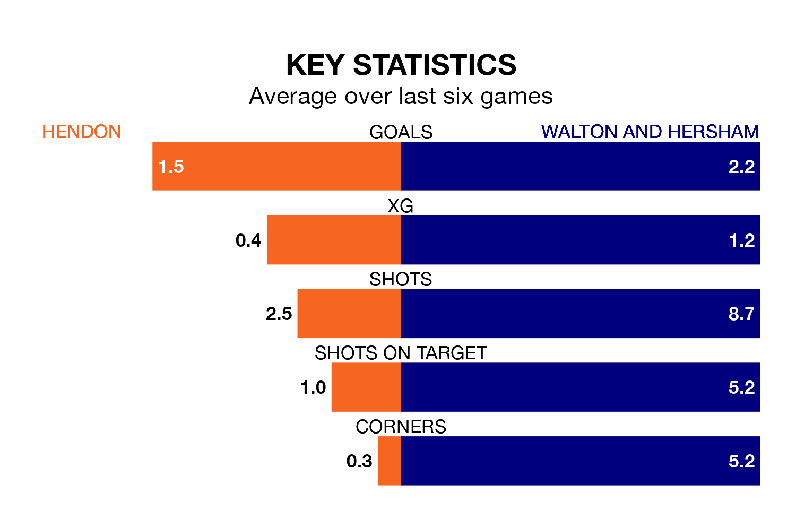

Walton and Hersham travel to Hendon on Saturday in the Southern League Premier South.
The visitors come into the game on the back of a defeat in their last match, having lost to AFC Totton 3-0 away.
Hendon, meanwhile, drew their last match, 0-0 against Hayes and Yeading United.
With 70 goals in 37 games so far this season, Walton & Hersham are scoring more than average in the league with 1.9 goals per game. And they are conceding at an average rate, letting in 64 goals at a rate of 1.7 per game.
Hendon are also above average scorers, with 1.8 goals per game, compared to a league average of 1.7. They have conceded 1.6 goals per game.
The visitors are eighth in the table after 37 games, of which they have won 15 and drawn nine, earning 54 points.
The home side are one place behind Walton & Hersham in ninth, with 13 wins and 12 draws putting them on 51 points.
Hendon are in mixed form in the Southern League Premier South, with two wins and a draw from their last six games.
With two wins and two draws over that period, Walton & Hersham's form is slightly better – they have taken eight points from 18, compared to Hendon's seven.
Over the last two years, Hendon and Walton & Hersham have played each other twice. Hendon won both of them.
Their last meeting was on November 21, when Hendon won 3-1 away.
Updated: 16:41 (UTC), 04/04/24